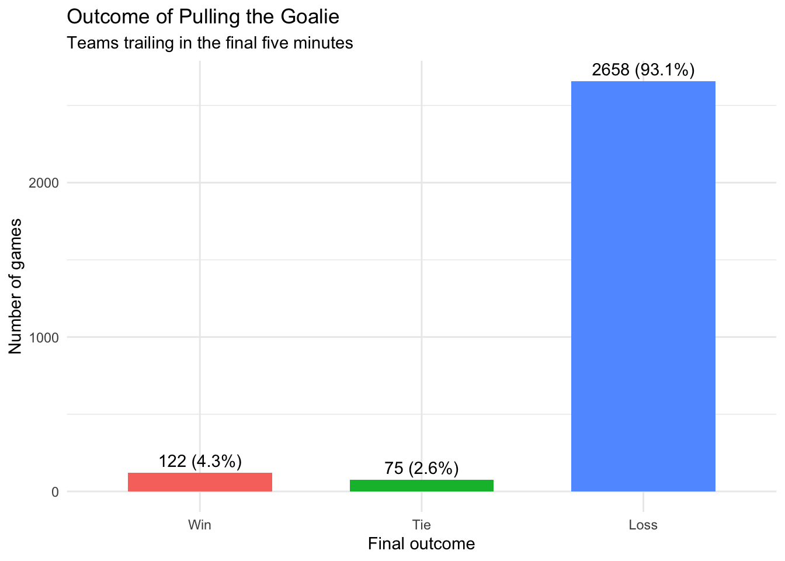
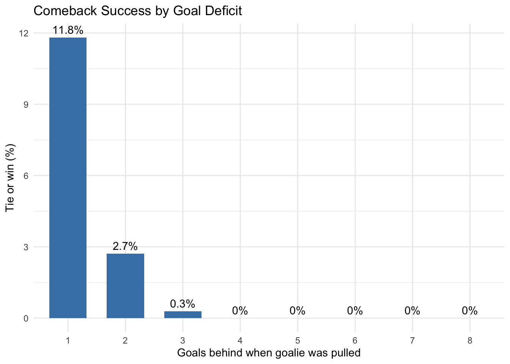
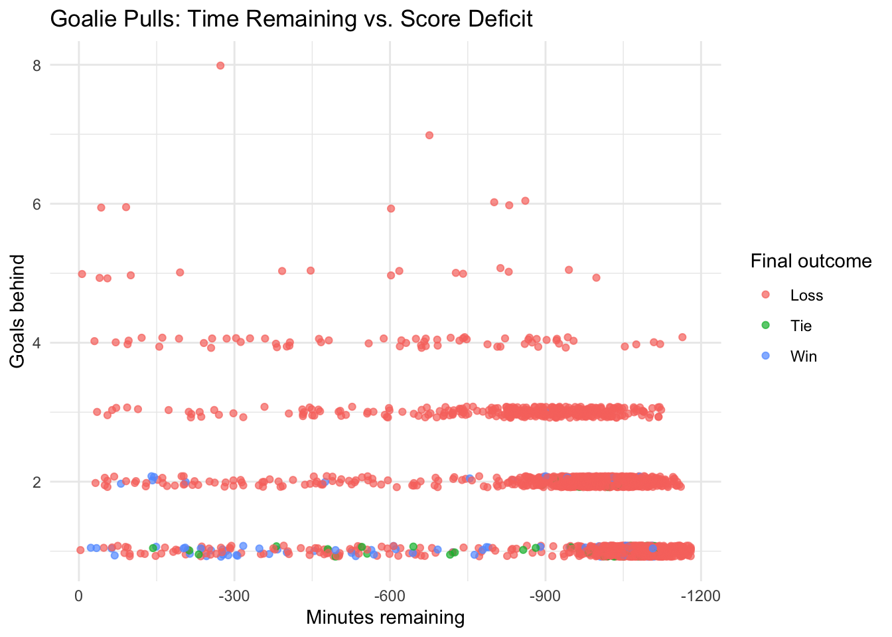

Tanisha D.
I am looking at the NHL data. This data is slightly more complicated than the pwhl data, because there is no empty_net column or a goalie_change event. Instead, there is a 4-digit Situation Code, structured like this: [Away Goalie][Away skaters][Home skaters][Home Goalie]. If either the first or the last characters are 0, then there is an empty net (the code may look like 1560, 0651, 0440, 0551, 1550, etc.). We also have to make sure the goalie pull is in the last 5 minutes of the period, just to make sure we are not accidentially counting a goalie change. For all of these instances where there is an empty net, we can record the score, and then map whether the team that pulled their goalie (the team that is losing) ended up tying or winning the game.
Cleaning and Wrangling the data
Code
#Find all events
events <- nhl %>%
arrange(game_id, sortOrder) %>%
group_by(game_id) %>%
fill(
details.awayScore,
details.homeScore,
.direction = "down"
) %>%
ungroup()
#Find all goalie pulls
events <- events %>%
mutate(
situationId = as.character(situationCode),
away_goalie = str_sub(situationCode, 1, 1),
home_goalie = str_sub(situationCode, 4, 4)
) %>%
group_by(game_id) %>%
arrange(sortOrder, .by_group = TRUE) %>%
mutate(
prev_away_goalie = lag(away_goalie),
prev_home_goalie = lag(home_goalie)
) %>%
ungroup()
#Find all away goalie pulls
away_pulls <- events %>%
filter(
prev_away_goalie == "1",
away_goalie == "0",
periodDescriptor.number == 3,
timeInPeriod >= hms::as_hms("00:15:00")
) %>%
transmute(
game_id,
team = "Away",
situationCode,
score_at_pull = details.awayScore,
opponent_score_at_pull = details.homeScore,
periodDescriptor.number,
timeInPeriod,
sortOrder
)
#Find all home goalie pulls
home_pulls <- events %>%
filter(
prev_home_goalie == "1",
home_goalie == "0",
periodDescriptor.number == 3,
timeInPeriod >= hms::as_hms("00:15:00")
) %>%
transmute(
game_id,
team = "Home",
situationCode,
score_at_pull = details.homeScore,
opponent_score_at_pull = details.awayScore,
periodDescriptor.number,
timeInPeriod,
sortOrder
)Code
#Merge the results back onto the pulls
results_5min <- pulls_5min %>%
select(-any_of(c(
"away_final", "home_final",
"final_team_score", "final_opponent_score",
"outcome", "seconds_remaining", "minutes_remaining"
))) %>%
left_join(final_scores, by = "game_id") %>%
mutate(
final_team_score = if_else(
team == "Away", away_final, home_final
),
final_opponent_score = if_else(
team == "Away", home_final, away_final
),
seconds_remaining = 1200 - as.numeric(timeInPeriod),
minutes_remaining = seconds_remaining / 60,
outcome = case_when(
is.na(final_team_score) ~ NA_character_,
final_team_score > final_opponent_score ~ "Win",
final_team_score == final_opponent_score ~ "Tie",
TRUE ~ "Loss"
)
)Exploratory Data Analysis and Visualization
Code
# A tibble: 1 × 6
attempts wins ties losses win_pct tie_or_win_pct
<int> <int> <int> <int> <dbl> <dbl>
1 2855 122 75 2658 4.27 6.90Code
results_5min %>%
count(outcome) %>%
mutate(
outcome = factor(
outcome,
levels = c("Win", "Tie", "Loss")
)
) %>%
ggplot(aes(x = outcome, y = n, fill = outcome)) +
geom_col(width = 0.65) +
geom_text(
aes(label = paste0(n, " (", round(n/sum(n)*100, 1), "%)")),
vjust = -0.5
) +
labs(
title = "Outcome of Pulling the Goalie",
subtitle = "Teams trailing in the final five minutes",
x = "Final outcome",
y = "Number of games"
) +
theme_minimal() +
theme(legend.position = "none")
Code
results_5min <- results_5min%>%
mutate(score_deficit = opponent_score_at_pull - score_at_pull)
deficit_results <- results_5min %>%
group_by(score_deficit) %>%
summarise(
attempts = n(),
wins = sum(outcome == "Win"),
ties = sum(outcome == "Tie"),
losses = sum(outcome == "Loss"),
success_rate = mean(outcome %in% c("Win", "Tie")) * 100,
.groups = "drop"
)
deficit_results# A tibble: 8 × 6
score_deficit attempts wins ties losses success_rate
<dbl> <int> <int> <int> <int> <dbl>
1 1 1431 103 66 1262 11.8
2 2 996 18 9 969 2.71
3 3 341 1 0 340 0.293
4 4 64 0 0 64 0
5 5 15 0 0 15 0
6 6 6 0 0 6 0
7 7 1 0 0 1 0
8 8 1 0 0 1 0 Code
ggplot(deficit_results,
aes(x = factor(score_deficit), y = success_rate)) +
geom_col(fill = "steelblue", width = 0.65) +
geom_text(
aes(label = paste0(round(success_rate, 1), "%")),
vjust = -0.5
) +
labs(
title = "Comeback Success by Goal Deficit",
x = "Goals behind when goalie was pulled",
y = "Tie or win (%)"
) +
theme_minimal()
Code
# A tibble: 2 × 6
team attempts wins ties losses success_rate
<chr> <int> <int> <int> <int> <dbl>
1 Away 1509 57 38 1414 6.30
2 Home 1346 65 37 1244 7.58Code
ggplot(results_5min,
aes(x = seconds_remaining / 60,
y = score_deficit,
color = outcome)) +
geom_jitter(width = 0.08, height = 0.08, alpha = 0.7) +
scale_x_reverse() +
labs(
title = "Goalie Pulls: Time Remaining vs. Score Deficit",
x = "Minutes remaining",
y = "Goals behind",
color = "Final outcome"
) +
theme_minimal()